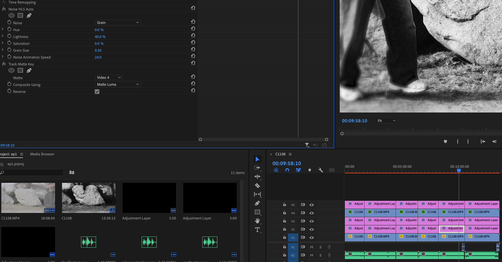

So for the EP that i have released some time last year, "tomorrow, or the day after", i wasnt really planning on doing any sort of music videos etc. But I wanted to have something to upload to youtube before making actual Music Videos, so the algorithm could kind of warm up to the type of content i will upload.
This is why I created these Visualizers for all 6 Songs. I basically just set down my camera and did one full take of "performing" the songs, more or less. Then I color graded them a cool black&white with some noise and cut them up.
Here is the linkOne interesting thing is the way i did the noise, because it only appeards in the shadows. For this I put the noise on a seperate Layer and put a Track Matte Key on top that tracks a copy of the video that has been processed with lumetri color to be really high contrast black & white.
Another this is that i put this noise layer BEFORE the actual color grade with lumetri color, because this takes the render time from hours to minutes and i dont know why.
thats it, this was kind of a test run post, but i will do more in the future i hope ;)